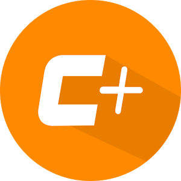

<!-- <nav class="navbar navbar-default">
  <div class="navbar">
    <ul class="nav navbar-nav">
      <a class="navbar-brand" href="http://concret.io" target="_blank" style="padding:0px;outline:0;">
        
      </a>
    </ul>
    <div class="navbar-header" style="float: left;" *ngFor="let menuItem of menu">
      <app-list-item *ngIf="!menuItem.children && menuItem.active" [label]="menuItem.name" [icon]="menuItem.icon" [path]="menuItem.path"></app-list-item>
    </div>
    <ul class="nav navbar-nav navbar-right" style="margin-right:10px;">
      <li>
        <a (click)="go()" style="font-size: 14px">
          <span class="fa fa-share-alt" style="color: #2196f3">
          </span> {{label}}</a>
      </li>
    </ul>
  </div>
</nav> -->

<nav class="navbar navbar-default navbar-fixed-top" style="margin-bottom:0px;">
  <div class="navbar">
      <ul class="nav navbar-nav">
          <a class="navbar-brand" href="http://concret.io" target="_blank" style="padding:0px;outline:0;" gacat="Container" ga-click-event="Visit Concretio">
              
          </a>
          <li ui-sref-active="active" >
              <a  gacat="Container" ga-click-event="View Debug Logs Tab" routerLink="/home/my">
              <i class="fa fa-bug"></i> Debug </a>
          </li>
          <li ui-sref-active="active">
              <a gacat="Container" routerLink="/home/events/all"><i class="fa fa-line-chart"></i> Events (beta)</a>
          </li>
          <!--
          <li ui-sref-active="active" ng-hide="sfdcSession.hasInvalidSession">
              <a href ui-sref="container.schemax({podName: sfdcSession.sfdcPodName})" gacat="Container" ga-click-event="View Schema Explorer Tab"><i class="ion-ios-list-outline"></i> Schema <small>(beta)</small></a>
          </li>
          -->
          <li ui-sref-active="active"><a routerLink ="/home/discussions/all">Discussions</a>
          </li>
          <li >
              <a (click)="openInNewWindow($event)" ><i class="fa fa-external-link"></i>
               <small><i>New window</i></small>
              </a>
          </li>
      </ul>
      <ul class="nav navbar-nav navbar-right" style="margin-right:10px;">
          <li>
              <small  gacat="Container" (click)="go()"><i style="font-size:16px;color: #2196f3" class="fa fa-share-alt"></i></small> &nbsp;
          </li>
          <li>
              <p>{{label}}</p>
          </li>
      </ul>
  </div>
</nav>
<!-- Content of a tab from nav bar above -->


<p-dialog header="Share with devs/admins !" [(visible)]="showDialog" [modal]="true" [responsive]="true" [width]="400" [height]="250"
  [minY]="70">
  <span>Hope you are liking the extension, why don't spread word about this extension and let other developers benefit as well.</span>
  <p-footer>
    <div class="dropdown">
      <button class="dropbtn">Share</button>
      <div class="dropdown-content">
        <a href="https://www.facebook.com/sharer/sharer.php?u=https://chrome.google.com/webstore/detail/salesforce-developer-tool/boadeeihehociaicnjjegenhdbifbllm/"
          target="_blank">Facebook</a>
        <a href="https://twitter.com/home?status=https://chrome.google.com/webstore/detail/salesforce-developer-tool/boadeeihehociaicnjjegenhdbifbllm/"
          target="_blank">Twitter</a>
      </div>
    </div>
    <button pButton type="button" label="Close" (click)="close()" class="ui-button-secondary"></button>
  </p-footer>
</p-dialog>